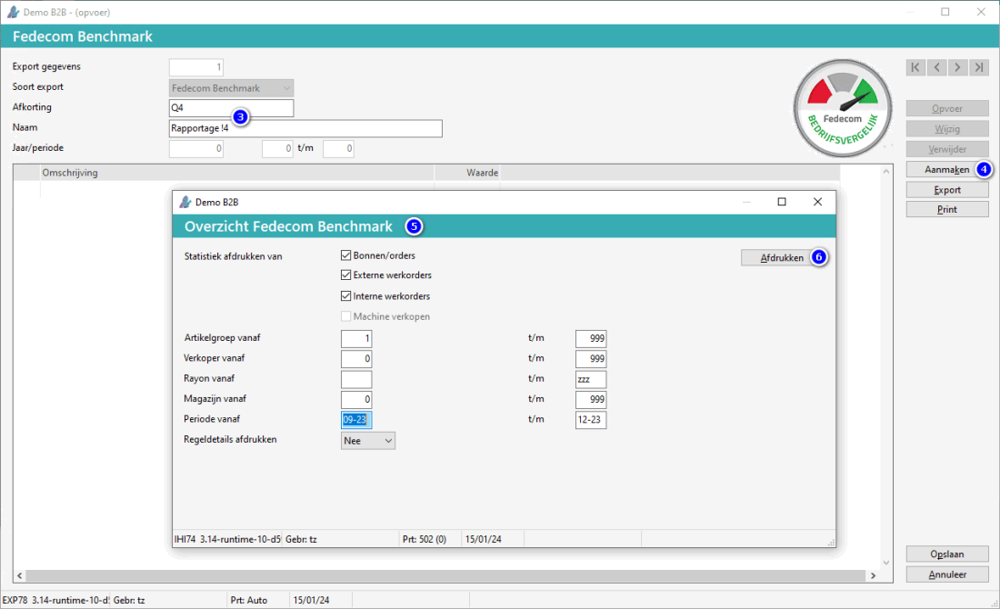
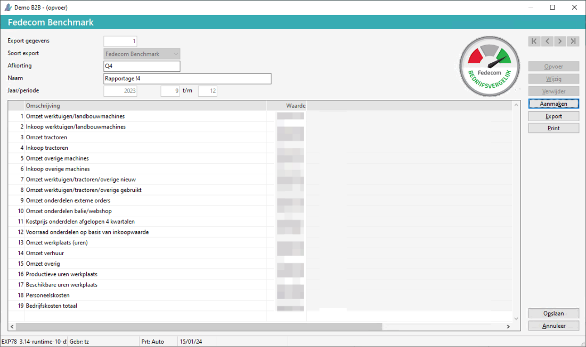

Open onderwerp met navigatie
Fedecom benchmark
Inleiding
Bedrijven die lid zijn van de Fedecom kunnen mee doen aan de Fedecom Benchmark. Deze benchmark is opgezet omdat er vanuit de markt veel vraag was naar vergelijkende cijfers. Bedrijven willen graag weten hoe ze presteren ten opzichte van andere, gelijkwaardige, bedrijven in de branche. Dit biedt Fedecom met hun benchmark om je te vergelijken met anderen.
Inrichting
E.a. moet ingericht zijn om gebruik te maken van deze module.
Opmerking: Neem contact op met de planner om dit in te stellen.
Opgave gegevens
Via het menu Uitwisselen derden kan een export aangemaakt worden. Om dit te doen, doorloopt u de volgende stappen:
-
Ga naar Fedecom benchmark (GUF).
- In Menu 3.0 onder
 Financieel > Overig > Uitwisselen derden.
Financieel > Overig > Uitwisselen derden.
-
Kies voor de knop Opvoer.
-
Vul de afkorting en naam in.

-
Kies voor de knop Aanmaken.
-
Kies de periode van t/m.
Opmerking: Bij regeldetails afdrukken Ja, wordt er een gedetailleerde overzicht getoond welke grootboekrekening waaronder valt, en welke orders er mee zijn gegaan in deze export).
-
Kies voor de knop Afdrukken.
- Sluit het scherm Overzicht omzet statistiek.
- Het volgende scherm verschijnt:
-
Controleer de gegevens.

Opmerking: De bedragen kunnen eventueel nog handmatig aangepast worden.
-
Kies voor de knop Opslaan.
-
Kies voor de knop Export.
De Fedecom gegevens zijn geëxporteerd.
Opgave Fedecom
Om de bedrijfsgegevens door te geven, doorloopt u de volgende stappen:
-
Log in op fedecom/leden-login.
-
Ga naar upload functie.
-
Upload het geëxporteerde bestand.
De gegevens zijn doorgegeven.
Copyright © 1990-2026 Beaver Creek Technology B.V. Disclaimer